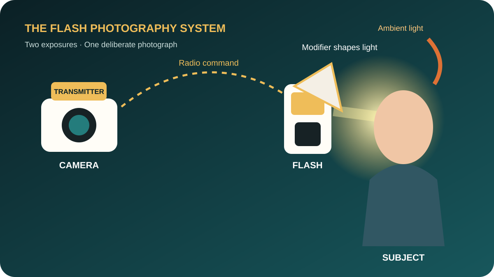
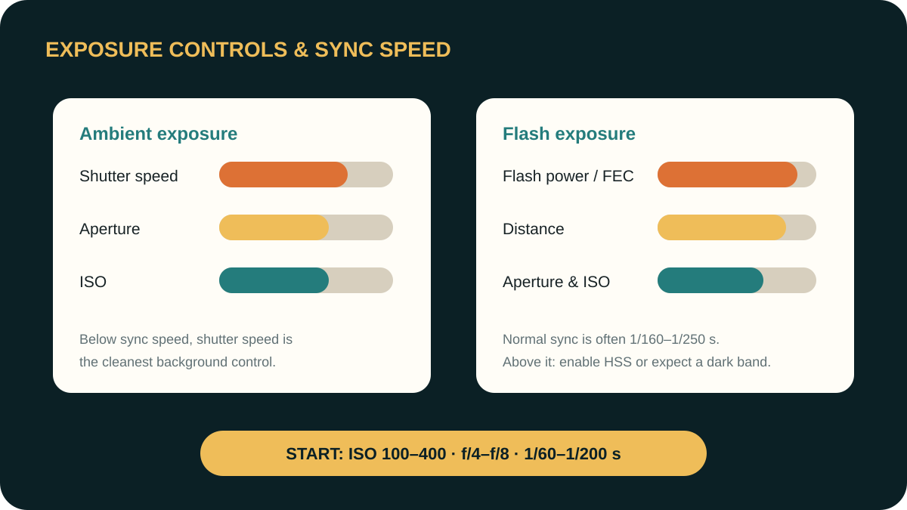
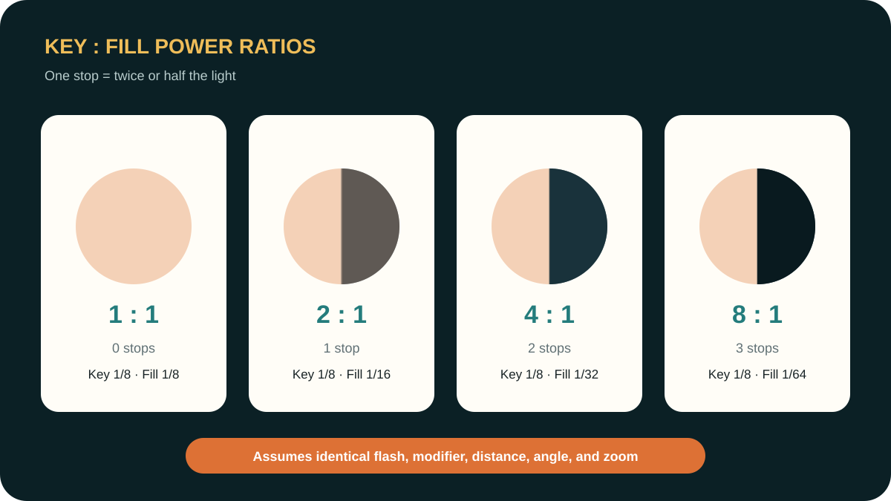
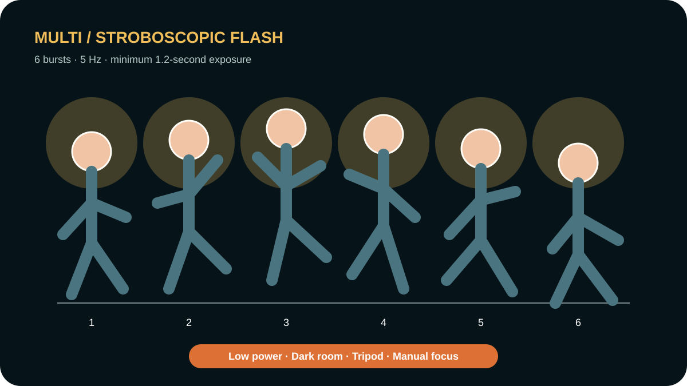
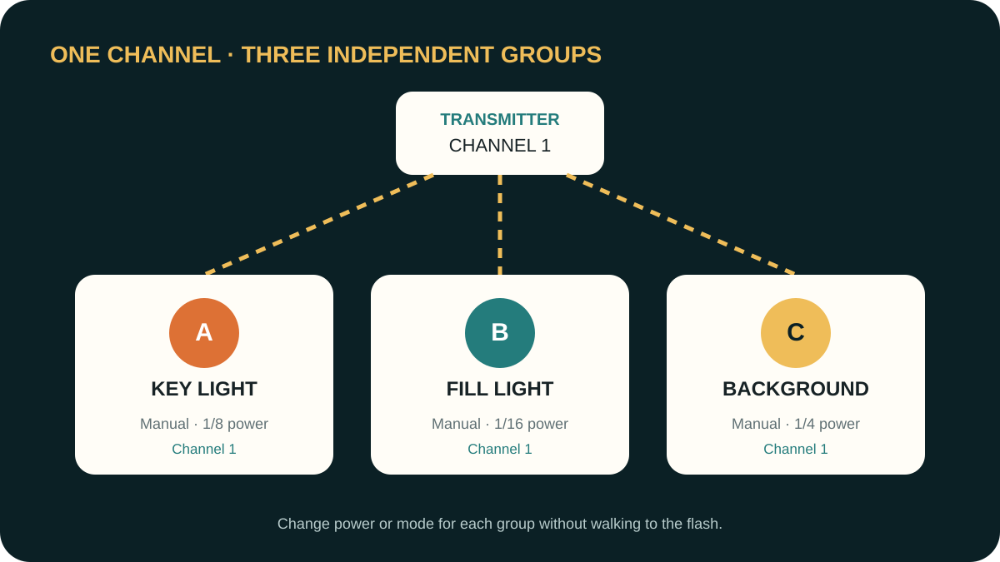
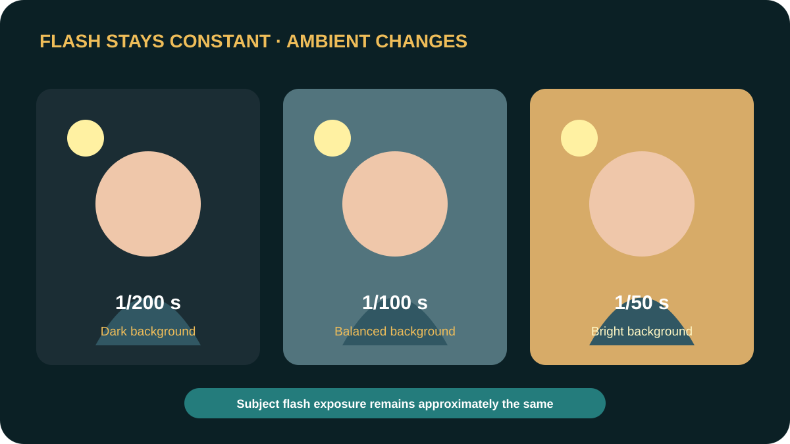
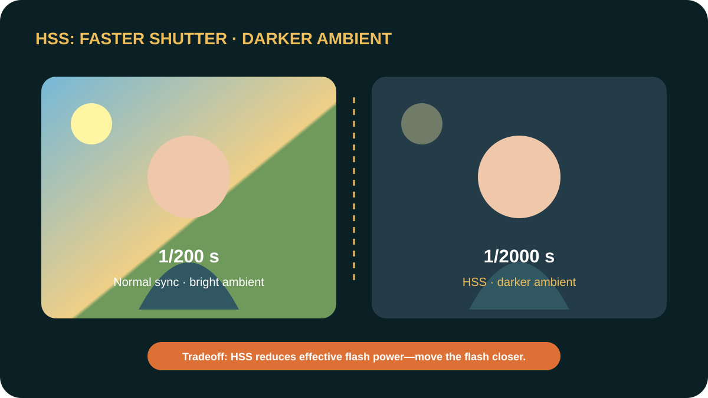
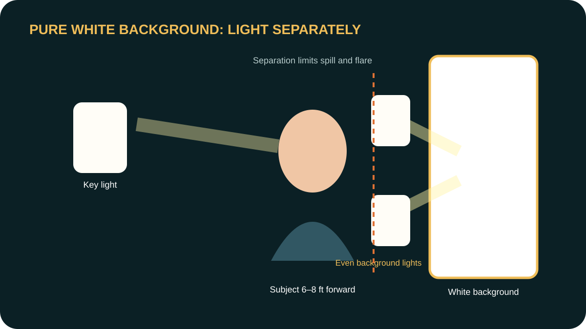
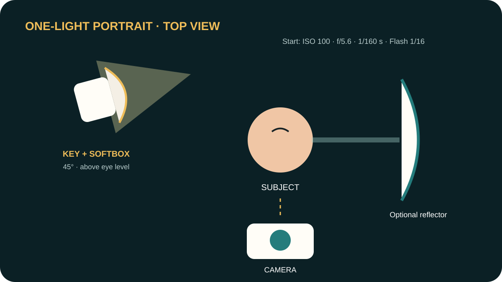
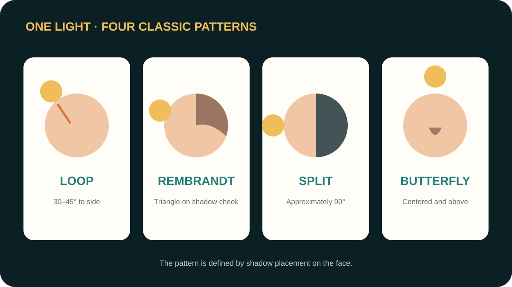

VNPS Photography Level 1
Flash Photography Fundamentals
A practical course in using one or more flashes to control the subject, preserve or suppress ambient light, and create clean, dimensional portraits.
Understand
Learn TTL, Manual, Multi, sync speed, HSS, flash power, ratios, channels, groups, and remote control.
Control
Separate ambient exposure from flash exposure and make deliberate background decisions.
Create
Build flattering one-light portraits and expand confidently to two- and three-light setups.

Purpose before settings
Why Use Flash?
Flash is not only for dark places. It gives the photographer a controllable source of light.
Add Light
Lift a face from darkness, reduce harsh shadows, or illuminate a subject at night.
Shape Light
Choose direction, softness, contrast, catchlights, and separation.
Control Time
A short flash duration can freeze motion even when the shutter is relatively slow.
Build a simple kit
Equipment & Light Quality
Start with one reliable flash and learn what position, size, and distance do before adding more equipment.
Speedlight
Portable, battery powered, TTL/Manual capable.
Trigger
Sends radio commands from the camera to remote flashes.
Modifier
Umbrella, softbox, bounce surface, grid, or reflector.
Support
Stand, bracket, sandbag, batteries, and optional light meter.
Hard Light
Small relative source, crisp shadows, higher local contrast, visible texture.
Soft Light
Large relative source placed close to the subject, gradual shadows, flattering skin.
A dependable starting point
Camera Exposure & Flash Sync
Learn which control primarily affects ambient light, flash light, or both.
| Control | Ambient Light | Flash Light | Primary Use |
|---|---|---|---|
| Shutter speed | Strong effect | Little effect below sync speed | Background brightness |
| Aperture | Affects exposure | Affects exposure | Depth of field and total exposure |
| ISO | Affects exposure | Affects exposure | Overall sensitivity |
| Flash power / FEC | No direct effect | Strong effect | Subject brightness |
| Flash distance | No effect | Strong effect | Brightness and softness |
Starting Point

Automatic flash control
TTL and Flash Exposure Compensation
TTL measures a pre-flash through the lens and calculates flash output for each frame.
Use TTL When
- The subject or photographer is moving.
- Flash-to-subject distance changes.
- Events move too quickly for repeated tests.
- Bouncing from changing surfaces.
Know Its Limits
- White or black clothing may bias the result.
- Reflective objects can confuse the reading.
- Reframing can change exposure.
- TTL is convenient, not automatically perfect.
| FEC | Result | Common Use |
|---|---|---|
| –2 to –1 EV | Subtle flash | Outdoor fill |
| 0 EV | Standard TTL result | General starting point |
| +0.3 to +1 EV | Brighter subject | Dark bounce surface or strong backlight |
Consistency and control
Manual Flash Power
Manual mode keeps output consistent until the photographer changes it.
| Power | Relative Output | Change |
|---|---|---|
| 1/1 | Full output | Maximum power |
| 1/2 | Half | 1 stop less |
| 1/4 | Quarter | 1 stop less |
| 1/8 | One eighth | 1 stop less |
| 1/16 | One sixteenth | 1 stop less |
| 1/32–1/128 | Low output | Fast recycle; short duration |
Too Dark?
Raise flash power, move the flash closer, open the aperture, or raise ISO.
Too Bright?
Lower flash power, move it farther away, close the aperture, or lower ISO.
Why Manual?
Studio, portraits, products, and any repeatable setup requiring frame-to-frame consistency.
One value versus a relationship
Flash Power and Lighting Ratios
A fraction such as 1/8 describes one flash. A ratio such as 2:1 describes the relationship between lights.
| Key : Fill | Difference | Example: Key 1/8 | Visual Effect |
|---|---|---|---|
| 1:1 | 0 stops | Fill 1/8 | Even, low contrast |
| 2:1 | 1 stop | Fill 1/16 | Gentle dimension |
| 4:1 | 2 stops | Fill 1/32 | Stronger contrast |
| 8:1 | 3 stops | Fill 1/64 | Dramatic shadows |

Multiple bursts in one frame
Multi Mode
Multi mode fires repeated low-power bursts during one exposure to record stages of movement.
Power
Output of each burst. Start around 1/32 or 1/64.
Count
Total number of bursts during the exposure.
Frequency
Bursts per second, measured in hertz (Hz).
Example: 6 flashes at 5 Hz require at least 1.2 seconds.

Wireless organization
Trigger, Channels, and Groups
The channel connects the system. Groups let the photographer control separate lighting roles.
- Mount the transmitter securely on the camera hot shoe.
- Choose one channel—for example, Channel 1—on the transmitter and every remote flash.
- Assign the Key Light to Group A, Fill Light to Group B, and Background or Rim Light to Group C.
- Choose TTL, Manual, or Off for each group.
- Test-fire the system, then adjust each group from the camera position.

Command and response
Master, Remote, and Optical Slave
Manufacturers may use Master/Slave, Commander/Remote, or Sender/Receiver for similar roles.
Master / Commander
Sends control instructions. It may contribute light or operate as command-only.
Radio Remote
No direct line of sight is required; generally reliable outdoors and through obstacles.
Optical Slave
Detects another flash burst; inexpensive but vulnerable to sunlight, obstructions, and other photographers.
| Mode | Behavior | Use |
|---|---|---|
| S1 | Fires on the first detected flash | Controlling flash in Manual mode |
| S2 | Ignores a TTL pre-flash and fires on the main burst | Controlling flash uses TTL |
Two exposures, one photograph
Preserve Ambient Light
Expose the environment first, then add only enough flash to shape or lift the subject.
- Turn the flash off and frame the photograph.
- Set Manual camera exposure for the desired background brightness.
- Turn on the flash and illuminate the subject.
- Adjust FEC or Manual power without unnecessarily changing the background.
- Fine-tune shutter speed to control ambient brightness below sync speed.
Ambient Light Simulator
Brighter Background
Use a slower shutter speed or raise ISO. This is often called dragging the shutter.
Darker Background
Use a faster shutter speed up to sync speed, lower ISO, or close the aperture and compensate with more flash.

Control bright daylight
HSS and Dark Backgrounds
High-Speed Sync allows shutter speeds faster than normal sync speed, useful with wide apertures or when suppressing bright ambient light.
- Set ISO 100 and choose the desired aperture—for example, f/2.8.
- Increase shutter speed until the background is as dark as desired.
- Enable HSS on the transmitter or flash system.
- Add flash to correctly expose the subject.
- Move the flash closer if it cannot overpower the ambient light.
Example
ISO 100 · f/2.8 · 1/2000 s · HSS enabled · Flash close to subject

High-key technique
Create a Pure White Background
Make the background brighter than the exposure chosen for the subject, while controlling spill and flare.
Preferred Method
Move the subject away from a white background. Light the subject and background separately. If the subject meters f/5.6, begin with the background near f/8.
One-Flash Alternatives
Use a bright window, backlit translucent material, or controlled spill on a nearby white wall. These methods offer less independent control.

| Problem | Cause | Correction |
|---|---|---|
| Gray background | Insufficient background exposure | Add power or move background lights closer |
| Lost hair/clothing edges | Excessive spill | Reduce power, flag lights, move subject forward |
| Low contrast or haze | Lens flare | Change angles, use flags, shade the lens |
| Uneven white | Poor light placement | Use two lights or increase distance for broader coverage |
The most useful first setup
Portrait with One Flash
One off-camera flash and a modifier can produce a complete, professional portrait.
Placement
- About 45° to one side
- Slightly above eye level
- Aimed downward toward the face
- Modifier close to the subject
- Subject 6–8 feet from the background
Starting Settings
Camera: Manual · ISO 100 · 1/160 s · f/5.6
Flash: Manual · 1/16 or 1/8 power
Wireless: Channel 1 · Group A

Move one light, change the face
One-Light Portrait Patterns
Lighting patterns describe where the shadows fall, not a required brand or power setting.
Loop
Light 30–45° to the side; a small nose shadow angles toward the cheek.
Rembrandt
Move farther to the side until a small triangle of light remains on the shadow-side cheek.
Split
Light near 90° to the side; one half of the face is illuminated.
Butterfly
Light above and centered; a symmetrical shadow forms beneath the nose.
Clamshell
Butterfly light plus a reflector below the face to open shadows.
Rim / Silhouette
Place the light behind the subject and carefully control flare.

Choose the simplest useful method
Common Flash Techniques
Match the technique to the situation instead of forcing one setup everywhere.
Direct Flash
Fast and efficient, but often hard and flat. Useful when no bounce surface exists.
Bounce Flash
Aim at a neutral wall or ceiling to create a larger, directional source.
Outdoor Fill
Expose the background, then begin near TTL FEC –1 to soften facial shadows.
Slow-Sync Portrait
Use 1/30–1/60 s to preserve room or city light while flash defines the subject.
Off-Camera Key
Move the light away from the lens axis to create shape and depth.
Rim or Background Light
Use another group to create separation or control the backdrop.
Diagnose one variable at a time
Common Problems and Solutions
When a result is wrong, identify whether the problem belongs to ambient exposure, flash exposure, direction, color, or communication.
| Problem | Likely Cause | Solution |
|---|---|---|
| Subject too bright | Too much flash | Reduce FEC/power or increase distance |
| Subject too dark | Too little flash | Increase FEC/power or move closer |
| Background too dark | Too little ambient exposure | Slow shutter or raise ISO |
| Hard wall shadow | Direct flash; subject too near wall | Bounce, move light off-axis, or move subject forward |
| Black band | Above sync speed without HSS | Lower shutter speed or enable HSS |
| Color cast | Bounce from colored surface | Use neutral surface, gel, or correct white balance |
| Flash does not fire | Channel/group/mode/battery mismatch | Verify system settings and test-fire |
| TTL exposure changes | Scene reflectance changed | Use FEC or switch to Manual |
Learn by comparison
Classroom Practice
Keep most variables constant so students can see what each control actually changes.
Exercise 1 · Direct vs Bounce
Make three frames: no flash, direct flash, and bounce flash. Compare shadows, skin, catchlights, and background.
Exercise 2 · Ambient Control
Keep flash constant. Shoot at 1/200, 1/100, and 1/50 second.
Exercise 3 · TTL and FEC
Photograph at FEC –1, 0, and +1. Choose the most natural result.
Exercise 4 · Manual Power
Keep position fixed. Compare 1/4, 1/8, and 1/16 power.
Exercise 5 · Ratios
Keep Key at 1/8. Set Fill to 1/8, 1/16, 1/32, and 1/64.
Exercise 6 · One-Light Portrait
Create Loop, Rembrandt, Split, and Butterfly patterns.
Homework
- Indoor portrait using bounce flash.
- Outdoor or window portrait using fill flash.
- Portrait using one off-camera flash at approximately 45°.
Include camera, lens, ISO, aperture, shutter speed, flash mode, FEC/power, position, modifier, and a brief self-critique.
Instructor answer guide
Exercise Solutions
Reveal each solution after students complete the comparison. The correct answer is the observed relationship—not one exact camera setting.
Exercise 1 · No Flash, Direct Flash, and Bounce Flash
Suggested Setup
Camera: Manual · ISO 400 · f/4 · 1/100 s. Use the same composition for all three photographs. Start the flash in TTL at FEC 0.
| Frame | Expected Observation | Explanation |
|---|---|---|
| No flash | Natural direction, but the face may be dark or noisy. | Only ambient light records the subject. |
| Direct flash | Bright face, harder shadow, flatter facial shape, possible bright skin highlights. | The small source is close to the lens axis. |
| Bounce flash | Softer shadow, smoother skin, more natural direction and depth. | The wall or ceiling becomes a much larger apparent light source. |
Exercise 2 · Control Ambient Light with Shutter Speed
Suggested Setup
Camera: ISO 400 · f/4. Flash: Manual 1/16 or fixed TTL/FEL. Photograph at 1/200, 1/100, and 1/50 s without changing the flash, aperture, ISO, distance, or composition.
| Shutter | Ambient Change | Expected Subject |
|---|---|---|
| 1/200 s | Darkest background | Flash-lit subject remains approximately consistent |
| 1/100 s | One stop brighter than 1/200 | Approximately the same flash exposure |
| 1/50 s | Two stops brighter than 1/200 | Approximately the same, with more motion-blur risk |
Exercise 3 · TTL and Flash Exposure Compensation
Suggested Setup
Keep the camera, framing, bounce direction, and subject fixed. Make photographs at FEC –1, 0, and +1.
| FEC | Expected Result | Likely Use |
|---|---|---|
| –1 EV | Subtle fill; more ambient character and shadow detail | Outdoor fill or a natural-looking event image |
| 0 EV | Camera’s standard TTL decision | Neutral starting point |
| +1 EV | Brighter subject; higher risk of shiny or clipped skin | Strong backlight or inefficient bounce, when needed |
Exercise 4 · Compare Manual Flash Power
Suggested Setup
Camera: Manual · ISO 100 · f/5.6 · 1/160 s. Fix the flash, modifier, subject, and camera. Photograph at 1/4, 1/8, and 1/16 power.
| Power | Relative Brightness | Expected Change |
|---|---|---|
| 1/4 | Brightest | One stop brighter than 1/8 |
| 1/8 | Middle | One stop darker than 1/4; one stop brighter than 1/16 |
| 1/16 | Darkest | Two stops darker than 1/4 |
Exercise 5 · Key-to-Fill Power Ratios
Suggested Setup
Use identical flashes and modifiers at equal distances. Keep Key Light at 1/8. Place Fill near the camera axis and change only its power.
| Key | Fill | Approx. Power Ratio | Expected Appearance |
|---|---|---|---|
| 1/8 | 1/8 | 1:1 | Low contrast; flatter modeling |
| 1/8 | 1/16 | 2:1 | Gentle, natural dimension |
| 1/8 | 1/32 | 4:1 | Clearly deeper shadows |
| 1/8 | 1/64 | 8:1 | Dramatic contrast and dark shadow side |
Exercise 6 · One-Light Portrait Patterns
Starting Setup
Camera: ISO 100 · f/5.6 · 1/160 s. Flash: Manual 1/16 or 1/8, Channel 1, Group A. Keep the modifier above eye level and close enough for soft light.
| Pattern | Light Position | Visual Evidence |
|---|---|---|
| Loop | About 30–45° to the side | Small nose shadow angled toward the cheek without touching it |
| Rembrandt | Farther to the side and above | Triangle of light on the shadow-side cheek |
| Split | About 90° to the side | One half of the face lit; the other half dark |
| Butterfly | Centered, high, aimed downward | Symmetrical butterfly-shaped shadow under the nose |
Homework Evaluation Guide
Technical control: 40% · Subject and ambient exposures are intentional; highlights are protected.
Light quality and direction: 30% · Shadows, catchlights, and facial modeling support the portrait.
Composition and expression: 20% · Background, pose, and moment strengthen the image.
Written reflection: 10% · Settings and self-critique clearly explain what worked and what should change.
Check understanding
Knowledge Check
Answer the questions, then review the five principles at the end.
Five Principles
- Decide the ambient exposure first.
- Use flash to control the subject.
- Make the source large and close for softness.
- Use channels to connect; groups to organize.
- Change one variable at a time.
Final Workflow
Compose → expose the background → place the light → set flash output → refine direction and softness → check highlights → photograph expression.
Use ← and → to move between chapters.